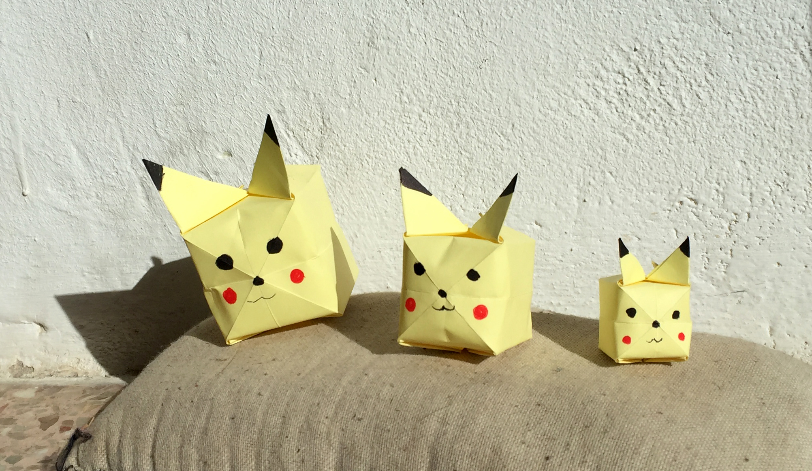
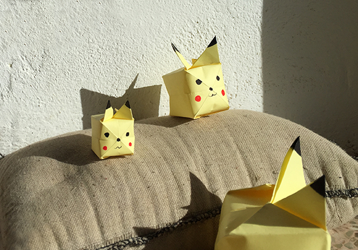

einfaches Origami, wir haben einige Anleitungen gefunden. Hier ein Beispiel.



einfaches Origami, wir haben einige Anleitungen gefunden. Hier ein Beispiel.

Wir hatten unsere erste Zauberstäbe- Session, in der wir Zauberstäbe von Harry Potter und seinen Kollegen nachgebastelt haben. Aber es wird nicht das letzte Mal sein,…
Weiterlesen →
Eine Zwille aus einem Ast. Als Griff haben wir Draht um das Zweigende gewickelt.
Weiterlesen →
Noah sammelt jetzt keine Karten mehr, sondern Samen. Jede Frucht die wir Essen wird jetzt untersucht und die Samen getrocknet. wir müssen noch ein anderes system…
Weiterlesen →
Stein Spiel Der Opa hat am Strand diese Steine gefunden... und wie könnte es anders sein, (der Apfel und der Stamm..) hat er sich gleich ein…
Weiterlesen →
Hier lassen wir Dir eine Katze als Druckvorlage . Das System ist wie das Kaninchen . Für Halloween kannst Du es mit langen Zähnen malen ...…
Weiterlesen →
Ich präsentiere euch die Zeichnungen von Ferran (5 Jahre). Der Künstler hat 1.einen Vampir 2. Frankenstein und 3. Sully und Mike von der Monster AG gemalt.…
Weiterlesen →